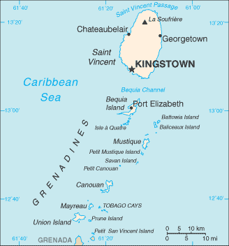
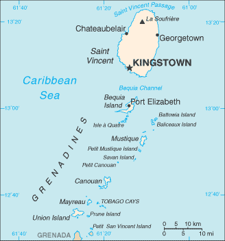

-
Introduction :: Saint Vincent and the Grenadines
-
Background:Resistance by native Caribs prevented colonization on Saint Vincent until 1719. Disputed between France and the UK for most of the 18th century, the island was ceded to the latter in 1783. Between 1960 and 1962, Saint Vincent and the Grenadines was a separate administrative unit of the Federation of the West Indies. Autonomy was granted in 1969 and independence in 1979.SAINT VINCENT AND THE GRENADINES SUMMARY: PDF
-
Geography :: Saint Vincent and the Grenadines
-
Location:Caribbean, islands between the Caribbean Sea and North Atlantic Ocean, north of Trinidad and TobagoGeographic coordinates:13 15 N, 61 12 WMap references:Central America and the CaribbeanArea:total: 389 sq km (Saint Vincent 344 sq km)land: 389 sq kmwater: 0 sq kmcountry comparison to the world: 205Area - comparative:twice the size of Washington, DCLand boundaries:0 kmCoastline:84 kmMaritime claims:territorial sea: 12 nmexclusive economic zone: 200 nmcontiguous zone: 24 nmcontinental shelf: 200 nmClimate:tropical; little seasonal temperature variation; rainy season (May to November)Terrain:volcanic, mountainousElevation:0 m lowest point: Caribbean Sea1234 highest point: La SoufriereNatural resources:hydropower, arable landLand use:agricultural land: 25.6% (2011 est.)arable land: 12.8% (2011 est.) / permanent crops: 7.7% (2011 est.) / permanent pasture: 5.1% (2011 est.)forest: 68.7% (2011 est.)other: 5.7% (2011 est.)Irrigated land:10 sq km (2012)Population distribution:most of the population is concentrated in and around the capital of KingstownNatural hazards:
hurricanes; La Soufriere volcano on the island of Saint Vincent is a constant threat
volcanism: La Soufriere (1,234 m) on the island of Saint Vincent last erupted in 1979; the island of Saint Vincent is part of the volcanic island arc of the Lesser Antilles that extends from Saba in the north to Grenada in the south
Environment - current issues:pollution of coastal waters and shorelines from discharges by pleasure yachts and other effluents; in some areas, pollution is severe enough to make swimming prohibitive; poor land use planning; deforestation; watershed management and squatter settlement controlEnvironment - international agreements:party to: Biodiversity, Climate Change, Climate Change-Kyoto Protocol, Desertification, Endangered Species, Environmental Modification, Hazardous Wastes, Law of the Sea, Marine Dumping, Ozone Layer Protection, Ship Pollution, Whalingsigned, but not ratified: none of the selected agreementsGeography - note:the administration of the islands of the Grenadines group is divided between Saint Vincent and the Grenadines and Grenada; Saint Vincent and the Grenadines is comprised of 32 islands and cays -
People and Society :: Saint Vincent and the Grenadines
-
Population:101,844 (July 2018 est.)country comparison to the world: 195Nationality:noun: Saint Vincentian(s) or Vincentian(s)adjective: Saint Vincentian or VincentianEthnic groups:African/black 72.8%, mixed 20%, Carib 3.6%, East Indian 1.4%, European 4%, other 1.5%, unspecified 0.6% (2001 est.)Languages:English, Vincentian Creole English, French patoisReligions:Protestant 70.6% (Anglican 17.8%, Pentecostal 17.6%, Methodist 10.8%, Seventh Day Adventist 10.2%, Baptist 10%, Church of God 2.5%, Brethren 1.3%, Salvation Army .3%, Presbyterian/Congregational .1%), Roman Catholic 7.5%, Evangelical 2.8%, Rastafarian 1.5%, Jehovah's Witness 0.6%, other 6.7%, none 8.8%, unspecified 1.5% (2001 est.)Age structure:0-14 years: 20.87% (male 10,725 /female 10,534)15-24 years: 15.58% (male 8,003 /female 7,865)25-54 years: 42.7% (male 22,567 /female 20,924)55-64 years: 11.03% (male 5,792 /female 5,437)65 years and over: 9.82% (male 4,715 /female 5,282) (2018 est.)population pyramid:
 The World Factbook Field Image ModalCentral America :: Saint Vincent and the Grenadines Print
The World Factbook Field Image ModalCentral America :: Saint Vincent and the Grenadines Print Image DescriptionThis is the population pyramid for Saint Vincent and the Grenadines. A population pyramid illustrates the age and sex structure of a country's population and may provide insights about political and social stability, as well as economic development. The population is distributed along the horizontal axis, with males shown on the left and females on the right. The male and female populations are broken down into 5-year age groups represented as horizontal bars along the vertical axis, with the youngest age groups at the bottom and the oldest at the top. The shape of the population pyramid gradually evolves over time based on fertility, mortality, and international migration trends.
Image DescriptionThis is the population pyramid for Saint Vincent and the Grenadines. A population pyramid illustrates the age and sex structure of a country's population and may provide insights about political and social stability, as well as economic development. The population is distributed along the horizontal axis, with males shown on the left and females on the right. The male and female populations are broken down into 5-year age groups represented as horizontal bars along the vertical axis, with the youngest age groups at the bottom and the oldest at the top. The shape of the population pyramid gradually evolves over time based on fertility, mortality, and international migration trends.
For additional information, please see the entry for Population pyramid on the Definitions and Notes page under the References tab.Dependency ratios:total dependency ratio: 46.8 (2015 est.)youth dependency ratio: 36 (2015 est.)elderly dependency ratio: 10.8 (2015 est.)potential support ratio: 9.3 (2015 est.)Median age:total: 34.2 yearsmale: 34.3 yearsfemale: 34 years (2018 est.)country comparison to the world: 87Population growth rate:-0.23% (2018 est.)country comparison to the world: 209Birth rate:13 births/1,000 population (2018 est.)country comparison to the world: 149Death rate:7.4 deaths/1,000 population (2018 est.)country comparison to the world: 117Net migration rate:-8.4 migrant(s)/1,000 population (2017 est.)country comparison to the world: 208Population distribution:most of the population is concentrated in and around the capital of KingstownUrbanization:urban population: 52.2% of total population (2018)rate of urbanization: 1.03% annual rate of change (2015-20 est.)Major urban areas - population:27,000 KINGSTOWN (capital) (2018)Sex ratio:at birth: 1.03 male(s)/female (2017 est.)0-14 years: 1.02 male(s)/female (2017 est.)15-24 years: 1.02 male(s)/female (2017 est.)25-54 years: 1.08 male(s)/female (2017 est.)55-64 years: 1.06 male(s)/female (2017 est.)65 years and over: 0.87 male(s)/female (2017 est.)total population: 1.03 male(s)/female (2017 est.)Maternal mortality rate:45 deaths/100,000 live births (2015 est.)country comparison to the world: 99Infant mortality rate:total: 11.7 deaths/1,000 live births (2018 est.)male: 12.7 deaths/1,000 live births (2018 est.)female: 10.6 deaths/1,000 live births (2018 est.)country comparison to the world: 122Life expectancy at birth:total population: 75.8 years (2018 est.)male: 73.7 years (2018 est.)female: 77.9 years (2018 est.)country comparison to the world: 101Total fertility rate:1.78 children born/woman (2018 est.)country comparison to the world: 154Health expenditures:8.6% of GDP (2014)country comparison to the world: 46Hospital bed density:2.6 beds/1,000 population (2014)Drinking water source:improved: urban: 95.1% of populationrural: 95.1% of populationtotal: 95.1% of populationunimproved: urban: 4.9% of populationrural: 4.9% of populationtotal: 4.9% of population (2015 est.)Sanitation facility access:improved: urban: 76.1% of population (2007 est.)rural: 76.1% of population (2007 est.)total: 76.1% of population (2007 est.)unimproved: urban: 23.9% of population (2007 est.)rural: 23.9% of population (2007 est.)total: 23.9% of population (2007 est.)HIV/AIDS - adult prevalence rate:NAHIV/AIDS - people living with HIV/AIDS:NAHIV/AIDS - deaths:NAMajor infectious diseases:note: active local transmission of Zika virus by Aedes species mosquitoes has been identified in this country (as of August 2016); it poses an important risk (a large number of cases possible) among US citizens if bitten by an infective mosquito; other less common ways to get Zika are through sex, via blood transfusion, or during pregnancy, in which the pregnant woman passes Zika virus to her fetus
Obesity - adult prevalence rate:23.7% (2016)country comparison to the world: 64Education expenditures:5.8% of GDP (2016)country comparison to the world: 42Unemployment, youth ages 15-24:total: 33.8% (2008 est.)male: 27.8% (2008 est.)female: 41.4% (2008 est.)country comparison to the world: 25 -
Government :: Saint Vincent and the Grenadines
-
Country name:conventional long form: noneconventional short form: Saint Vincent and the Grenadinesetymology: Saint Vincent was named by explorer Christopher COLUMBUS after Saint VINCENT of Saragossa because the 22 January 1498 day of discovery was the saint's feast dayGovernment type:parliamentary democracy (House of Assembly) under a constitutional monarchy; a Commonwealth realmCapital:name: Kingstowngeographic coordinates: 13 08 N, 61 13 Wtime difference: UTC-4 (1 hour ahead of Washington, DC, during Standard Time)Administrative divisions:6 parishes; Charlotte, Grenadines, Saint Andrew, Saint David, Saint George, Saint PatrickIndependence:27 October 1979 (from the UK)National holiday:Independence Day, 27 October (1979)Constitution:history: previous 1969, 1975; latest drafted 26 July 1979, effective 27 October 1979 (The Saint Vincent Constitution Order 1979) (2018)amendments: proposed by the House of Assembly; passage requires at least two-thirds majority vote of the Assembly membership and assent to by the governor general; passage of amendments to constitutional sections on fundamental rights and freedoms, citizen protections, various government functions and authorities, and constitutional amendment procedures requires approval by the Assembly membership, approval in a referendum of at least two-thirds of the votes cast, and assent to by the governor general (2018)Legal system:English common lawInternational law organization participation:has not submitted an ICJ jurisdiction declaration; accepts ICCt jurisdictionCitizenship:citizenship by birth: yescitizenship by descent only: at least one parent must be a citizen of Saint Vincent and the Grenadinesdual citizenship recognized: yesresidency requirement for naturalization: 7 yearsSuffrage:18 years of age; universalJudicial branch:highest courts: the Eastern Caribbean Supreme Court (ECSC) is the superior court of the Organization of Eastern Caribbean States; the ECSC - headquartered on St. Lucia - consists of the Court of Appeal - headed by the chief justice and 4 judges - and the High Court with 18 judges; the Court of Appeal is itinerant, travelling to member states on a schedule to hear appeals from the High Court and subordinate courts; High Court judges reside in the member states, with 2 assigned to Saint Vincent and the Grenadines; note - Saint Vincent and the Grenadines is also a member of the Caribbean Court of Justicejudge selection and term of office: chief justice of Eastern Caribbean Supreme Court appointed by Her Majesty, Queen ELIZABETH II; other justices and judges appointed by the Judicial and Legal Services Commission, an independent body of judicial officials; Court of Appeal justices appointed for life with mandatory retirement at age 65; High Court judges appointed for life with mandatory retirement at age 62subordinate courts: magistrates' courtsExecutive branch:chief of state: Queen ELIZABETH II (since 6 February 1952); represented by Governor General Sir Frederick Nathaniel BALLANTYNE (since 2 September 2002)head of government: Prime Minister Ralph E. GONSALVES (since 29 March 2001)cabinet: Cabinet appointed by the governor general on the advice of the prime ministerelections/appointments: the monarchy is hereditary; governor general appointed by the monarch; following legislative elections, the leader of the majority party usually appointed prime minister by the governor general; deputy prime minister appointed by the governor general on the advice of the prime ministerLegislative branch:description: unicameral House of Assembly (23 seats; 15 representatives directly elected in single-seat constituencies by simple majority vote, 6 senators appointed by the governor general, and 2 ex officio members - the speaker of the house and the attorney general; members serve 5-year terms)elections: last held on 9 December 2015 (next to be held in 2020)election results: percent of vote by party - ULP 52.3%, NDP 47.4%, other 0.3%; seats by party - ULP 8, NDP 7Political parties and leaders:Democratic Republican Party or DRP [Anesia BAPTISTE]
New Democratic Party or NDP [Godwin L. FRIDAY]
Unity Labor Party or ULP [Dr. Ralph GONSALVES] (formed in 1994 by the coalition of Saint Vincent Labor Party or SVLP and the Movement for National Unity or MNU)
SVG Green Party or SVGP [Ivan O'NEAL]International organization participation:ACP, AOSIS, C, Caricom, CDB, CELAC, FAO, G-77, IBRD, ICAO, ICCt, ICRM, IDA, IFAD, IFRCS, ILO, IMF, IMO, Interpol, IOC, IOM, ISO (subscriber), ITU, MIGA, NAM, OAS, OECS, OPANAL, OPCW, Petrocaribe, UN, UNCTAD, UNESCO, UNIDO, UPU, WFTU (NGOs), WHO, WIPO, WTODiplomatic representation in the US:chief of mission: Ambassador Lou-Anne Gaylene GILCHRIST (since 18 January 2017)chancery: 1627 K Street, NW, Suite 1202, Washington, DC 20006telephone: [1] (202) 364-6730FAX: [1] (202) 364-6730consulate(s) general: New YorkDiplomatic representation from the US:the US does not have an embassy in Saint Vincent and the Grenadines; the US Ambassador to Barbados is accredited to Saint Vincent and the GrenadinesFlag description:three vertical bands of blue (hoist side), gold (double width), and green; the gold band bears three green diamonds arranged in a V pattern, which stands for Vincent; the diamonds recall the islands as "the Gems of the Antilles" and are set slightly lowered in the gold band to reflect the nation's position in the Antilles; blue conveys the colors of a tropical sky and crystal waters, yellow signifies the golden Grenadine sands, and green represents lush vegetationNational symbol(s):Saint Vincent parrot; national colors: blue, gold, greenNational anthem:name: St. Vincent! Land So Beautiful!lyrics/music: Phyllis Joyce MCCLEAN PUNNETT/Joel Bertram MIGUELnote: adopted 1967
-
Economy :: Saint Vincent and the Grenadines
-
Economy - overview:
Success of the economy hinges upon seasonal variations in agriculture, tourism, and construction activity, as well as remittances. Much of the workforce is employed in banana production and tourism. Saint Vincent and the Grenadines is home to a small offshore banking sector and continues to fully adopt international regulatory standards.
This lower-middle-income country remains vulnerable to natural and external shocks. The economy has shown some signs of recovery due to increased tourist arrivals, falling oil prices and renewed growth in the construction sector. The much anticipated international airport opened in early 2017 with hopes for increased airlift and tourism activity. The government's ability to invest in social programs and respond to external shocks is constrained by its high public debt burden, which was 67% of GDP at the end of 2013.
GDP (purchasing power parity):$1.265 billion (2017 est.)$1.256 billion (2016 est.)$1.246 billion (2015 est.)note: data are in 2017 dollars
country comparison to the world: 202GDP (official exchange rate):$785 million (2017 est.) (2017 est.)GDP - real growth rate:0.7% (2017 est.)0.8% (2016 est.)0.8% (2015 est.)country comparison to the world: 190GDP - per capita (PPP):$11,500 (2017 est.)$11,400 (2016 est.)$11,300 (2015 est.)note: data are in 2017 dollars
country comparison to the world: 133Gross national saving:12.1% of GDP (2017 est.)10.3% of GDP (2016 est.)10.4% of GDP (2015 est.)country comparison to the world: 148GDP - composition, by end use:household consumption: 87.3% (2017 est.)government consumption: 16.6% (2017 est.)investment in fixed capital: 10.8% (2017 est.)investment in inventories: -0.2% (2017 est.)exports of goods and services: 37.1% (2017 est.)imports of goods and services: -51.7% (2017 est.)GDP - composition, by sector of origin:agriculture: 7.1% (2017 est.)industry: 17.4% (2017 est.)services: 75.5% (2017 est.)Agriculture - products:bananas, coconuts, sweet potatoes, spices; small numbers of cattle, sheep, pigs, goats; fishIndustries:tourism; food processing, cement, furniture, clothing, starchIndustrial production growth rate:2.5% (2017 est.)country comparison to the world: 118Labor force:57,520 (2007 est.)country comparison to the world: 188Labor force - by occupation:agriculture: 26%industry: 17%services: 57% (1980 est.)Unemployment rate:18.8% (2008 est.)country comparison to the world: 182Population below poverty line:NABudget:revenues: 225.2 million (2017 est.)expenditures: 230 million (2017 est.)Taxes and other revenues:28.7% (of GDP) (2017 est.)country comparison to the world: 93Budget surplus (+) or deficit (-):-0.6% (of GDP) (2017 est.)country comparison to the world: 66Public debt:73.8% of GDP (2017 est.)82.8% of GDP (2016 est.)country comparison to the world: 42Fiscal year:calendar yearInflation rate (consumer prices):2.2% (2017 est.)-0.2% (2016 est.)country comparison to the world: 115Central bank discount rate:6.5% (31 December 2010)6.5% (31 December 2009)country comparison to the world: 64Commercial bank prime lending rate:8.75% (31 December 2017 est.)9.12% (31 December 2016 est.)country comparison to the world: 96Stock of narrow money:$190.6 million (31 December 2017 est.)$177.7 million (31 December 2016 est.)country comparison to the world: 185Stock of broad money:$190.6 million (31 December 2017 est.)$177.7 million (31 December 2016 est.)country comparison to the world: 188Stock of domestic credit:$443 million (31 December 2017 est.)$424.6 million (31 December 2016 est.)country comparison to the world: 179Current account balance:-$116 million (2017 est.)-$122 million (2016 est.)country comparison to the world: 89Exports:$48.6 million (2017 est.)$47.3 million (2016 est.)country comparison to the world: 203Exports - partners:Jordan 40.7%, France 12.5%, Barbados 7%, St. Lucia 6.8%, Antigua and Barbuda 5.7%, US 5.5%, Trinidad and Tobago 4.7% (2017)Exports - commodities:bananas, eddoes and dasheen (taro), arrowroot starch; tennis racquetsImports:$295.9 million (2017 est.)$294.6 million (2016 est.)country comparison to the world: 204Imports - commodities:foodstuffs, machinery and equipment, chemicals and fertilizers, minerals and fuelsImports - partners:US 36.8%, Trinidad and Tobago 19.1%, UK 7%, China 5.8% (2017)Reserves of foreign exchange and gold:$182.1 million (31 December 2017 est.)$192.3 million (31 December 2016 est.)country comparison to the world: 178Debt - external:$362.2 million (31 December 2017 est.)$330.8 million (31 December 2016 est.)country comparison to the world: 183Stock of direct foreign investment - at home:(31 December 2009 est.)Exchange rates:East Caribbean dollars (XCD) per US dollar -2.7 (2017 est.)2.7 (2016 est.)2.7 (2015 est.)2.7 (2014 est.)2.7 (2013 est.) -
Energy :: Saint Vincent and the Grenadines
-
Electricity access:population without electricity: 25,587 (2012)electrification - total population: 76% (2012)electrification - urban areas: 100% (2012)electrification - rural areas: 32% (2012)Electricity - production:157 million kWh (2016 est.)country comparison to the world: 196Electricity - consumption:146 million kWh (2016 est.)country comparison to the world: 198Electricity - exports:0 kWh (2016 est.)country comparison to the world: 191Electricity - imports:0 kWh (2016 est.)country comparison to the world: 193Electricity - installed generating capacity:54,000 kW (2016 est.)country comparison to the world: 189Electricity - from fossil fuels:85% of total installed capacity (2016 est.)country comparison to the world: 72Electricity - from nuclear fuels:0% of total installed capacity (2017 est.)country comparison to the world: 175Electricity - from hydroelectric plants:13% of total installed capacity (2017 est.)country comparison to the world: 110Electricity - from other renewable sources:2% of total installed capacity (2017 est.)country comparison to the world: 143Crude oil - production:0 bbl/day (2017 est.)country comparison to the world: 193Crude oil - exports:0 bbl/day (2015 est.)country comparison to the world: 187Crude oil - imports:0 bbl/day (2015 est.)country comparison to the world: 189Crude oil - proved reserves:0 bbl (1 January 2018 est.)country comparison to the world: 189Refined petroleum products - production:0 bbl/day (2015 est.)country comparison to the world: 196Refined petroleum products - consumption:1,620 bbl/day (2016 est.)country comparison to the world: 198Refined petroleum products - exports:0 bbl/day (2015 est.)country comparison to the world: 197Refined petroleum products - imports:1,621 bbl/day (2015 est.)country comparison to the world: 194Natural gas - production:0 cu m (2017 est.)country comparison to the world: 191Natural gas - consumption:0 cu m (2017 est.)country comparison to the world: 193Natural gas - exports:0 cu m (2017 est.)country comparison to the world: 176Natural gas - imports:0 cu m (2017 est.)country comparison to the world: 182Natural gas - proved reserves:0 cu m (1 January 2014 est.)country comparison to the world: 188Carbon dioxide emissions from consumption of energy:226,800 Mt (2017 est.)country comparison to the world: 197
-
Communications :: Saint Vincent and the Grenadines
-
Telephones - fixed lines:total subscriptions: 20,111 (2017 est.)subscriptions per 100 inhabitants: 20 (2017 est.)country comparison to the world: 178Telephones - mobile cellular:total subscriptions: 116,161 (2017 est.)subscriptions per 100 inhabitants: 114 (2017 est.)country comparison to the world: 190Telephone system:general assessment: adequate islandwide, fully automatic telephone system (2016)domestic: fixed-line teledensity exceeds 19 per 100 persons and mobile-cellular teledensity is about 103 per 100 persons (2016)international: country code - 1-784; the East Caribbean Fiber System and Southern Caribbean Fiber submarine cables carry international calls; connectivity also provided by VHF/UHF radiotelephone from Saint Vincent to Barbados; SHF radiotelephone to Grenada and Saint Lucia; access to Intelsat earth station in Martinique through Saint Lucia (2016)Broadcast media:St. Vincent and the Grenadines Broadcasting Corporation operates 1 TV station and 5 repeater stations that provide near total coverage to the multi-island state; multi-channel cable TV service available; a partially government-funded national radio service broadcasts on 1 station and has 2 repeater stations; about a dozen privately owned radio stations and repeater stations (2007)Internet country code:.vcInternet users:total: 53,000 (July 2016 est.)percent of population: 51.8% (July 2016 est.)country comparison to the world: 192Broadband - fixed subscriptions:total: 24,507 (2017 est.)subscriptions per 100 inhabitants: 24 (2017 est.)country comparison to the world: 146
-
Transportation :: Saint Vincent and the Grenadines
-
National air transport system:number of registered air carriers: 2 (2015)inventory of registered aircraft operated by air carriers: 11 (2015)Civil aircraft registration country code prefix:J8 (2016)Airports:6 (2013)country comparison to the world: 175Airports - with paved runways:total: 5 (2017)1,524 to 2,437 m: 1 (2017)914 to 1,523 m: 3 (2017)under 914 m: 1 (2017)Airports - with unpaved runways:total: 1 (2013)under 914 m: 1 (2013)Roadways:total: 829 km (2003)paved: 580 km (2003)unpaved: 249 km (2003)country comparison to the world: 189Merchant marine:total: 882 (2017)by type: bulk carrier 22, container ship 12, general cargo 198, oil tanker 17, other 633 (2017)country comparison to the world: 26Ports and terminals:major seaport(s): Kingstown
-
Military and Security :: Saint Vincent and the Grenadines
-
Military branches:no regular military forces; Royal Saint Vincent and the Grenadines Police Force (RSVPF) (2013)
-
Transnational Issues :: Saint Vincent and the Grenadines
-
Disputes - international:joins other Caribbean states to counter Venezuela's claim that Aves Island sustains human habitation, a criterion under UN Convention on the Law of the Sea, which permits Venezuela to extend its EEZ/continental shelf over a large portion of the eastern Caribbean SeaTrafficking in persons:current situation: Saint Vincent and the Grenadines is a source, transit, and destination country for men, women, and children subjected to forced labor and sex trafficking; some children under 18 are pressured to engage in sex acts in exchange for money or gifts; foreign workers may experience forced labor and are particularly vulnerable when employed by small, foreign-owned companies; adults and children are vulnerable to forced labor domestically, especially in the agriculture sectortier rating: Tier 2 Watch List – Saint Vincent and the Grenadines does not fully comply with the minimum standards for the elimination of trafficking; however, it is making significant efforts to do so; the government for the first time acknowledged a trafficking problem, launched an anti-trafficking public awareness campaign, and conducted anti-trafficking training for law enforcement, immigration, and labor officials; in 2014, authorities initiated three trafficking investigations, two of which were ultimately determined not to be trafficking cases, and did not prosecute or convict any trafficking offenders; the government did not identify or refer any potential trafficking victims to care (2015)Illicit drugs:transshipment point for South American drugs destined for the US and Europe; small-scale cannabis cultivation
Central America ::
Saint Vincent and the Grenadines